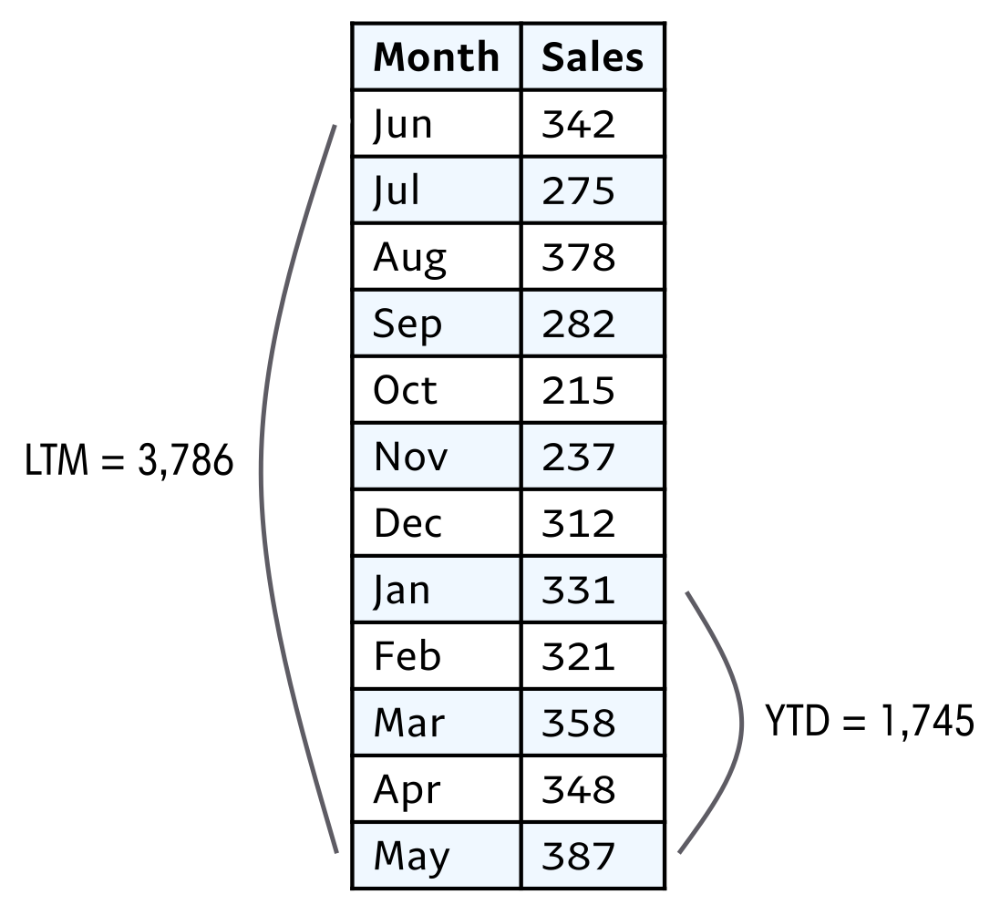

This book is a first draft, and I am actively collecting feedback to shape the final version until March 1, 2026. Let me know if you spot typos, errors in the code, or unclear explanations, your input would be greatly appreciated. And your suggestions will help make this book more accurate, readable, and useful for others. You can reach me at: Email:contervalconsult@gmail.com LinkedIn:www.linkedin.com/in/jorammutenge Datasets:Download all datasets
The classic example of time series data is stock prices. They’re interesting to look at and, of course, nobody is all that good at modeling them because if they were, they would be filthy rich.
— Aileen Nielsen
Having introduced the fundamentals of Polars and the essential steps involved in preparing data, I will now shift our focus to specific forms of analysis that Polars makes possible. Today’s wide range of datasets allows for many ways to explore and interpret information. To keep this manageable, I have organized several types of analysis into themes across this and the following chapters, so you can build your skills in a steady progression. Many of these techniques build on concepts discussed earlier, particularly in Chapter 2, and then extend them with more advanced methods. Because time series data is both common and essential, it is the first theme we will explore.
A time series is a collection of observations recorded in sequence over time, often at consistent intervals. Examples are everywhere, with common ones including stock prices and temperature data. Time series data appears across nearly every industry. Sensor readings, DevOps monitoring, continuous integration systems, and patient measurements in healthcare all rely on time-oriented observations. Time series analysis is used in statistics, engineering, economics, meteorology, and many other fields as a way to measure and understand how things change over time.
Forecasting is one of the most frequent objectives in time series analysis. Since time moves forward, we can attempt to project future values based on past patterns, although the reverse is impossible. It is important, however, to remember that historical data does not guarantee future outcomes. Changes in consumer behavior, technological advances, new regulations, or unexpected global events can all shift trends. Even so, examining historical patterns often provides meaningful insights and helps organizations prepare for a range of possibilities. As I write this, society is grappling with the rapid rise of artificial intelligence and its potential to reshape white-collar work. While this particular disruption is new, organizations have weathered other shocks such as the COVID-19 pandemic and the 2008 financial crisis. Careful analysis, supported by contextual awareness, makes it possible to extract lessons even during periods of uncertainty.
This chapter begins with an overview of Polars tools for working with time series data, including dates, datetimes, timestamps, and temporal functions. I then introduce the customer inquiries dataset and the Transportation Security Administration (TSA) checkpoint travel numbers dataset, both of which serve as running examples for the chapter. From there, I explore techniques for identifying trends, calculating rolling windows, and performing period-over-period comparisons to capture seasonal patterns. The chapter concludes with additional strategies that strengthen time series analysis and expand your analytical toolkit.
3.1 Date, Datetime, and Time Manipulations
Time series data often comes in many different datetime formats, depending on the source. In Polars, you frequently transform datetime values to one consistent format so you can derive new temporal features. For example, a dataset may include transaction datetimes while the analysis requires grouping by month to study sales trends. In other cases, you might need to calculate how many days or months have passed since a particular event. Polars provides a rich set of expressions and functions that make these transformations straightforward.
This section shows how to adjust for time zones, then covers techniques for formatting date and datetime columns. After that, I demonstrate date arithmetic and temporal operations, including those that use durations. A duration in Polars represents a span of time, such as hours, days, or months, and you can combine it with datetime values to shift or compare them. Durations are not usually stored as standalone columns but are commonly used inside expressions together with datetime functions. Finally, I cover some nuances to keep in mind when aligning or joining data from multiple sources, especially when their time representations differ.
3.1.1 Time Zone Conversions
When working with temporal data in Polars, it is important to know which time zone the dataset uses. Misaligned time zones can lead to incorrect conclusions. Time zones divide the globe into regions that share the same local clock time, ensuring that noon roughly corresponds to the sun being overhead. These boundaries are not purely geographic; they often follow political decisions. While most zones differ from UTC by whole hours, some use offsets of 30 or 45 minutes, and many regions observe daylight saving time. In the United States, for example, some states observe daylight saving while others do not. Each zone has a standard identifier or abbreviation, such as CST (Central Standard Time) or CDT (Central Daylight Time).
Most systems store datetime values and timestamps in Coordinated Universal Time (UTC), the global reference standard that replaced Greenwich Mean Time (GMT). UTC does not shift for daylight saving, which makes it stable and reliable for logging. This consistency is useful for analysis. For instance, when daylight saving begins and clocks move forward by one hour, a day in CDT has only 23 hours instead of the usual 24. If you analyze daily sales, you might see an apparent dip on that date simply because one hour of activity is missing.
UTC, however, does not capture the local context of the person generating the event. If you want to study usage patterns, for example whether app activity peaks during work hours or in the evening, convert datetime values to the relevant local time zone. This is especially important when your audience spans multiple zones or countries.
Every local time zone is defined by its offset from UTC. For example:
CDT has an offset of UTC minus 5 hours
CST has an offset of UTC minus 6 hours
In Polars, datetime values use ISO 8601 format (YYYY-MM-DD hh:mm:ss) with UTC as the default time zone. You can change the time zone of a datetime column from UTC to “America/Chicago” by using dt.convert_time_zone. Using a named zone such as “America/Chicago” is preferable because it is specific and automatically handles Daylight Saving Time (DST). See this list of time zone names for other options.
Time zones are a fundamental consideration whenever you work with time series data. Polars provides tools that let you shift values from the zone in which they were captured to any other region’s local time. In the next section, I walk through approaches for handling and transforming date and datetime columns using Polars.
3.1.2 Date and Datetime Format Conversions
Datetimes are central to time series analysis, and because source data often encodes dates in many different formats, you will almost certainly need to transform them during your workflow. In Polars, you can handle these conversions directly through expressions, whether that means casting a column to a different type, extracting components such as year or month, or constructing a new datetime from individual parts.
I’ll begin with functions that provide the current date or time. These are frequently used in analysis, for example to timestamp the results of a query or to serve as a reference point in datetime arithmetic. The values returned reflect the system clock, often called system time.
Polars has no built-in function to return the current date or time. Instead, it relies on the Python datetime module:
from datetime import date, datetime(utc_df .with_columns(Current_Date=pl.lit(date.today()), Current_Time=pl.lit(datetime.now()).dt.time()))
shape: (1, 3)
Date
Current_Date
Current_Time
datetime[μs, UTC]
date
time
2025-09-01 00:00:00 UTC
2026-01-26
00:56:56.108446
Polars includes many expressions for reshaping and formatting date and datetime values. To lower the level of detail in a datetime column, such as rounding down to the start of a month or week, use .dt.truncate with a parameter that specifies the time unit you want to truncate to, such as 'day', 'month', or 'hour'. The result is a new datetime series aligned to the chosen granularity. In the example below, I create a new column named New_Date with the value 2025-08-05 11:32:35 and drop the original Date column so it does not interfere with the demonstration.
In the New_Date column, the lower level detail (32 minutes and 35 seconds) from the original datetime value is removed because of the one-hour truncation.
Table 3.1: String language used in every argument.
Shorthand string
Meaning
1ns
1 nanosecond
1us
1 microsecond
1ms
1 millisecond
1s
1 second
1m
1 minute
1h
1 hour
1d
1 calendar day
1w
1 calendar week
1mo
1 calendar month
1q
1 calendar quarter
1y
1 calendar year
Instead of always working with complete date or datetime values, you may sometimes need only specific components. For example, you might want to analyze sales by month, weekday, or hour.
Polars includes functions that let you extract only the portion of a date or datetime you need. In most cases, dates and datetimes can be used interchangeably, but if you’re pulling out a time-related components, a datetime is necessary.
To access these components, use the dt accessor. It provides direct access to components of a datetime object. For instance, calling dt.year on a date or datetime returns the year as an integer.
Table 3.2 highlights several commonly used datetime components in Polars that are especially useful for time series analysis. For a complete list of available components, refer to the Polars documentation.
Table 3.2: Frequently used datetime components for time series analysis.
Expression
Description
dt.date
Extract date from date(time).
dt.days_in_month
Extract the number of days in the month
dt.is_leap_year
Determine whether the year of the underlying date is a leap year. Return values are boolean (true/false).
dt.minute
Returns the minute number from 0 to 59.
dt.month_end
Rolls date forward to the last day of the month.
dt.month_start
Rolls date backward to the first day of the month.
dt.ordinal_day
Returns the day of year starting from 1. The return value ranges from 1 to 366.
dt.quarter
Returns the quarter in a year ranging from 1 to 4.
dt.second
Returns the integer second number from 0 to 59.
dt.timestamp
Return a timestamp in the given time unit.
dt.week
Returns the ISO week number starting from 1. The return value ranges from 1 to 53.
dt.weekday
Returns the ISO weekday number where monday = 1 and sunday = 7
Working with dates often means extracting human‑readable components, such as the weekday name “Monday” or the month “January”. The Polars expression dt.strftime lets you convert a date or datetime column into a formatted string using familiar specification codes.
I prefer using short day and month names when labeling bars in charts. Shorter labels help keep the chart tidy and reduce the risk of overlapping text between bars.
See Table 3.3 for a full list of the available format specifications.
Table 3.3: Date and time format specifications for text output.
Spec.
Example
Description
DATE SPECIFIERS:
%Y
2001
The full proleptic Gregorian year, zero-padded to 4 digits. chrono supports years from -262144 to 262143. Note: years before 1 BCE or after 9999 CE, require an initial sign (+/-).
%C
20
The proleptic Gregorian year divided by 100, zero-padded to 2 digits.
%y
1
The proleptic Gregorian year modulo 100, zero-padded to 2 digits.
%q
1
Quarter of year (1-4)
%m
7
Month number (01–12), zero-padded to 2 digits.
%b
Jul
Abbreviated month name. Always 3 letters.
%B
July
Full month name. Also accepts corresponding abbreviation in parsing.
%h
Jul
Same as %b.
%d
8
Day number (01–31), zero-padded to 2 digits.
%e
8
Same as %d but space-padded. Same as %_d.
%a
Sun
Abbreviated weekday name. Always 3 letters.
%A
Sunday
Full weekday name. Also accepts corresponding abbreviation in parsing.
Week number starting with Sunday (00–53), zero-padded to 2 digits.
%W
27
Same as %U, but week 1 starts with the first Monday in that year instead.
%G
2001
Same as %Y but uses the year number in ISO 8601 week date.
%g
1
Same as %y but uses the year number in ISO 8601 week date.
%V
27
Same as %U but uses the week number in ISO 8601 week date (01–53).
%j
189
Day of the year (001–366), zero-padded to 3 digits.
%D
07/08/01
Month-day-year format. Same as %m/%d/%y.
%x
07/08/01
Locale’s date representation (e.g., 12/31/99).
%F
2001-07-08
Year-month-day format (ISO 8601). Same as %Y-%m-%d.
%v
8-Jul-2001
Day-month-year format. Same as %e-%b-%Y.
TIME SPECIFIERS:
%H
0
Hour number (00–23), zero-padded to 2 digits.
%k
0
Same as %H but space-padded. Same as %_H.
%I
12
Hour number in 12-hour clocks (01–12), zero-padded to 2 digits.
%l
12
Same as %I but space-padded. Same as %_I.
%P
am
am or pm in 12-hour clocks.
%p
AM
AM or PM in 12-hour clocks.
%M
34
Minute number (00–59), zero-padded to 2 digits.
%S
60
Second number (00–60), zero-padded to 2 digits.
%f
26490000
Number of nanoseconds since last whole second.
%.f
0.026490
Decimal fraction of a second. Consumes the leading dot.
%.3f
0.026
Decimal fraction of a second with a fixed length of 3.
%.6f
0.026490
Decimal fraction of a second with a fixed length of 6.
%.9f
0.026490000
Decimal fraction of a second with a fixed length of 9.
%3f
26
Decimal fraction of a second like %.3f but without the leading dot.
%6f
26490
Decimal fraction of a second like %.6f but without the leading dot.
%9f
26490000
Decimal fraction of a second like %.9f but without the leading dot.
%R
00:34
Hour-minute format. Same as %H:%M.
%T
00:34:60
Hour-minute-second format. Same as %H:%M:%S.
%X
00:34:60
Locale’s time representation (e.g., 23:13:48).
%r
12:34:60 AM
Locale’s 12 hour clock time. (e.g., 11:11:04 PM). Falls back to %X if the locale does not have a 12 hour clock format.
DATE & TIME SPECIFIERS:
%c
Sun Jul 8 00:34:60 2001
Locale’s date and time (e.g., Thu Mar 3 23:05:25 2005).
%+
2001-07-08T00:34:60.026490+09:30
ISO 8601 / RFC 3339 date & time format.
%s
994518299
UNIX timestamp, the number of seconds since 1970-01-01 00:00 UTC
You may occasionally encounter timestamps stored as Unix epochs. These are integer values that represent the number of seconds that have passed since January 1, 1970, at 00:00:00 UTC. Polars provides the expression pl.from_epoch to convert these values into proper datetime objects.
When you read a file with Polars, it attempts to guess the data type for each column. In most cases, the guess is correct. However, a column that should have a Date or Datetime data type may sometimes be assigned the String type instead.
In this example, the date column has been incorrectly assigned the String type. You can set the option try_parse_dates=True to instruct Polars to parse date values as Datetime.
There are cases where try_parse_dates=True does not succeed, and you must convert the data type after reading the file. The following example shows a dataset where the date values are not automatically converted, even with try_parse_dates=True.
You must ensure that the format string you provide to strptime matches the format used in the Date column. In this dataset, the values follow the month, day, year pattern. The separators must also match. Refer to Table 3.3 for details on date format specifications.
3.1.3 Date Math
Polars allows you to perform arithmetic with date and time values. This may seem unusual at first, since dates are not numeric types, but the concept is intuitive if you have ever tried to determine what day it will be six weeks from now. Working with dates in this way is central to many analytical tasks. For example, you might calculate an employee’s age or tenure, measure the duration between two events, or count how many records fall within a specific time window.
In Polars, date calculations rely on two key components: the datetime values themselves and the intervals applied to them. Intervals are essential because time components do not behave like simple integers. Dividing 100 by ten results in 10, while dividing a year by ten results in approximately 36.5 days. Splitting 100 in half produces 50, but splitting a day in half produces 12 hours. Intervals provide the structure needed to work consistently across different time units. Polars distinguishes between day intervals and time intervals, and each type is useful depending on the calculation you need to perform.
To start, consider calculating the number of days between two dates. Subtracting one datetime column from another produces a duration, which you can then express in different units. For example, dt.total_days returns the duration in days, and dt.total_hours returns the duration in hours. I’ll use the two_dates dataframe below to demonstrate.
shape: (3, 2)
Date_1
Date_2
datetime[μs]
datetime[μs]
2014-09-28 11:56:02
2014-03-10 08:11:59
2014-04-24 16:51:22
2014-04-11 02:50:03
2014-09-17 17:26:22
2014-02-14 20:10:42
You can calculate the duration between Date_1 and Date_2 in the two_dates, as well as the total number of days, hours, and minutes contained in that duration.
A second with_columns call is used because the calculations for days, hours, and minutes depend on the Duration column, which does not exist in the original two_dates dataframe.
shape: (3, 6)
Date_1
Date_2
Duration
Days
Hours
Minutes
datetime[μs]
datetime[μs]
duration[μs]
i64
i64
i64
2014-09-28 11:56:02
2014-03-10 08:11:59
202d 3h 44m 3s
202
4851
291104
2014-04-24 16:51:22
2014-04-11 02:50:03
13d 14h 1m 19s
13
326
19561
2014-09-17 17:26:22
2014-02-14 20:10:42
214d 21h 15m 40s
214
5157
309435
The duration, along with any values derived from it, can be negative when the first date in the subtraction occurs earlier in time.
Polars does not provide a built-in function to calculate the number of months between two dates. You could divide the total number of days by 30, but this only produces an approximation, since month lengths vary. The polars-xdt library offers additional datetime functionality for Polars, including a function that computes month differences accurately. You can install it with the following command:
pip install polars-xdt
After installing the library, you can use it to calculate the number of months between two dates.
import polars_xdt as xdt(two_dates1 .with_columns(pl.all().dt.date()) .with_columns(Months=xdt.month_delta('Date_2','Date_1')) )
1
The polars-xdt functions require Date_1 and Date_2 to contain date values rather than datetime values.
shape: (3, 3)
Date_1
Date_2
Months
date
date
i32
2014-09-28
2014-03-10
6
2014-04-24
2014-04-11
0
2014-09-17
2014-02-14
7
Another useful feature of polars-xdt is its ability to return day and month names in different languages.
You now know how to calculate the duration between two dates by subtracting one from another. If you want to add days to a date, you can use the dt.offset_by expression.
You can replace '7d' with '1w' to produce the same result.
2
To subtract days, prefix the string passed to dt.offset_by with a minus sign.
shape: (3, 3)
Date
Add_7_Days
Sub_7_Days
date
date
date
2014-09-28
2014-10-05
2014-09-21
2014-04-24
2014-05-01
2014-04-17
2014-09-17
2014-09-24
2014-09-10
Date arithmetic is a common part of analysis in Polars. You can measure the duration between two dates or datetimes, and you can create new dates by adding or subtracting intervals from an existing one. Polars provides several ways to perform these calculations. With these concepts in place, we can now shift to time manipulations, which follow similar principles.
3.1.4 Time Math
Time calculations are not always the first tool analysts reach for, but they become critical in many situations. You might need to measure how long a delivery driver spends between leaving a warehouse and arriving at a customer’s address, or determine the duration of a workout session from start to finish. When the gap between two datetimes is shorter than a full day, or when expressing the difference only in days hides important detail, working directly with time values is the right choice. Time arithmetic operates much like date arithmetic because both use Duration objects. You can add or subtract time intervals with dt.offset_by.
dt.offset_by works only on date or datetime values. It does not operate on time values. This is why the addition or subtraction happens before converting to time.
shape: (3, 3)
Date_1
Add_2_Hours
Sub_5_Hrs_30_Min
datetime[μs]
time
time
2014-09-28 11:56:02
13:56:02
06:26:02
2014-04-24 16:51:22
18:51:22
11:21:22
2014-09-17 17:26:22
19:26:22
11:56:22
You cannot add two time values from different columns, but you can subtract them. The two_times dataframe below contains two time columns.
shape: (3, 2)
Time_1
Time_2
time
time
11:56:02
08:11:59
16:51:22
02:50:03
17:26:22
20:10:42
Subtract Time_1 from Time_2 to calculate the duration between them.
Now that you have seen how to work with dates, datetimes, and times by changing formats, converting time zones, and performing date calculations, we can move on to time series analysis. The next section introduces one of the datasets used throughout the remainder of the chapter.
3.2 The Customer Inquiries Dataset
The majority of the examples that follow are based on a dataset of daily customer inquiries and service requests recorded by Brisbane City Council’s Business Hotline. The data is available on the Brisbane City Council Open Data Portal and includes records of inquiries by service type and communication channel. The table reports the number of inquiries received each day, providing insight into how businesses interact with the Council through phone, email, and other channels. Figure 3.1 shows a sample of the customer inquiries dataset.
Figure 3.1: Preview of the Business Hotline customer inquiries dataset
Because Brisbane City Council updates the dataset regularly, some of the most recent daily records may be missing from the version used in this book by the time you read it. To reproduce the results shown here, I recommend using the same CSV file.
3.3 Trending the Data
When working with time series data, a common goal is to identify patterns or trends. A trend shows the general direction in which the data is moving. It may indicate growth, decline, or stability. In some cases, strong fluctuations or random variation can make the trend harder to recognize. This section introduces several approaches for analyzing time series trends, including basic visualizations, separating trend components, calculating percentages to compare parts of the whole, and using indexing to measure changes relative to a starting point.
3.3.1 Simple Trends
Building a trend can support the data exploration process or serve as the final result. A typical time series dataset includes date or datetime values paired with numerical values. When plotted, the date is placed on the x-axis and the values on the y-axis. For example, you might study how the daily volume of customer inquiries to Brisbane City Council’s Business Hotline coming through the voice-in channel changes over time to understand the overall trend. Let’s start by reading the data.
This data shows a slight downward trend, although daily values include a significant amount of noise. Transforming the data and aggregating at the monthly level can provide a clearer view. First, I use the group_by_dynamic method to place the dates into monthly windows, then sum the passenger volume within each window.
The column containing date or datetime values must be sorted before group_by_dynamic is used.
The graph below shows a smoother time series that decreases over time. It suggests that the voice-in channel is gradually losing popularity as a way for Brisbanites to submit customer inquiries to Brisbane City Council’s Business Hotline.
Visualizing time series data at different levels of detail, such as weekly, monthly, or yearly, provides useful insight into patterns and trends. Depending on your objectives, this step can serve as an initial exploration or the final outcome of the analysis. Next, I’ll look at how to use Polars to compare components within a time series.
3.3.2 Comparing Components
Many datasets contain more than a single time series. Instead, they hold multiple slices or components that span the same time range. Comparing these slices helps us identify patterns that may not be evident when looking only at the overall totals. In the customer_inquiries dataframe, we have both total inquiry volumes and several subcategories. In this section, we’ll compare yearly volume trends for selected communication types in the Channel column. Before doing so, we need to clean the values in Channel, beginning with a review of the unique entries.
To simplify the analysis, group values that refer to the same communication type but appear as separate channels. For example, “Voice In” and “Voice Out” can be combined into a single channel labeled “Voice.”
The pipe operator | means or and allows you to filter rows that contain either “Email” or “e-mail”.
shape: (5, 1)
Channel
str
"Email"
"Ordinary Mail"
"Face2Face"
"SMS"
"Voice"
Once the dataset is cleaned, the number of unique values in Channel decreases from 10 to 5. Using the customer_inquiries_clean dataframe, we can now compare the yearly volume trends for the top three channels: “Face2Face”, “Voice”, and “Email”.
Voice inquiries were the highest in 2015. They rose sharply and peaked around 2017. After that, they declined steadily and fell below two thousand by 2025. Email inquiries started much lower and stayed flat until 2022. They then increased quickly, passed voice by 2024, and continued to grow through 2025. This shift suggests a growing preference for digital communication. Face2face inquiries were the lowest throughout the entire period. They saw a small increase around 2024 but never came close to the volume of voice or email. By 2025 they had declined again, which suggests limited reliance on in-person interactions over time.
Beyond examining basic trends, we may also want to compare different portions of a time series. In the following examples, we will focus on the monthly volumes for voice and email communication channels. We will begin by charting the monthly trend for each channel.
While the month‑to‑month figures reveal interesting patterns, they also contain a fair amount of volatility. To smooth out this noise and highlight longer‑term trends, the next set of examples will rely on yearly totals instead of monthly values.
The gap between voice and email inquiries was initially large, with voice inquiries far exceeding email from 2015 through 2019. Voice volume peaked around 2018 and then declined steadily, while email volume fluctuated at lower levels during the same period. After 2020, the decline in voice inquiries continued, and email began a gradual rise. By 2024 the two channels had moved much closer together, and in 2025 email inquiries surpassed voice for the first time.
Instead of relying on visual estimation, we can measure the difference between voice and email more precisely. This involves calculating the gap, the relative ratio, and the percentage difference across the two channels. To support these calculations, the data must be organized so that each month appears once, with separate columns for voice and email. Pivoting on Channel with Date as the index creates that structure.
With this structure in place, we can calculate the difference, ratio, and percent difference between the two time series. The difference is found by subtracting one channel’s value from the other. Depending on the goals of the analysis, you may want the difference relative to voice or the difference relative to email. Both options are shown here and differ only in their sign.
The chart below shows the trend in customer inquiry volume after subtracting email inquiries from voice inquiries. The gap narrows substantially over time. The difference reaches its peak around 2018, then declines steadily in the years that follow. By 2024, the line crosses below zero, which shows that email inquiries have surpassed voice inquiries and signals a broader shift toward digital communication channels.
Let’s push our exploration further by examining the ratio of these two channels. For this comparison, we’ll treat the number of email inquiries as our reference point (the denominator). Of course, we could just as easily flip the perspective and use voice inquiries as the denominator instead:
The chart below reveals that the ratio of voice to email customer inquiries shows a clear downward trend over the decade, despite significant fluctuations. After peaking at nearly 10:1 in 2020, the ratio has declined sharply to below 1:1 by 2024, indicating a fundamental shift away from voice inquiries toward email as the preferred communication channel.
(to_plot .hvplot.line(x='Year', y='Voice_Times_of_Email', xlabel='', ylabel='') .opts(title="Yearly ratio of voice to email customer inquiries volume", default_tools=['pan']) )
We can also express this relationship in terms of percentage difference between the two channels:
Although the units here differ from the ratio calculation, the overall shape of the curve remains identical. Which metric you choose depends on your audience and the conventions of your field. Each of the following statements is equally valid:
In 2019, voice inquiries exceeded email inquiries by 4,595.
In 2019, voice inquiries were 4.2 times greater than email inquiries.
In 2019, voice inquiries were 322% higher than email inquiries.
The framing you select should align with the narrative you want your analysis to emphasize.
The transformations demonstrated in this section highlight how time series can be compared by focusing on related components. In the next section, we’ll continue this theme by exploring techniques for analyzing series that represent parts of a whole.
3.3.3 Percent of Total Calculations
When working with time series datasets that contain several components of a whole, it is often helpful to examine how each element contributes to the total and how those proportions change over time. If the dataset does not already include overall totals for each point in the series, we first need to compute those totals before calculating each row’s percentage share. This is typically done with the sum function combined with the over expression.
We could have used group_by_dynamic as in the earlier examples, but this approach illustrates another way to aggregate.
2
Using over preserves the number of rows in the dataframe.
shape: (252, 3)
Month
Channel
Pct_Total_Volume
date
str
f64
2015-04-01
"Email"
31.884058
2015-04-01
"Voice"
68.115942
2015-05-01
"Email"
28.75817
2015-05-01
"Voice"
71.24183
2015-06-01
"Email"
10.239651
…
…
…
2025-07-01
"Voice"
19.480519
2025-08-01
"Email"
75.417661
2025-08-01
"Voice"
24.582339
2025-09-01
"Voice"
34.042553
2025-09-01
"Email"
65.957447
The chart below highlights several trends. Beginning in 2015, voice inquiries dominated customer communication and consistently represented more than 80 percent of monthly inquiries. Email accounted for a relatively small share during this period. Around 2020 a major shift took place. Voice inquiries declined sharply, and email inquiries rose at a similar pace, indicating a change in customer preferences. From 2023 onward, the two channels moved toward parity, with email increasing and voice continuing to decline.
(to_plot .pivot(index='Month', on='Channel') .hvplot.line(x='Month', y=['Voice','Email'], height=500, yformatter='%.0f%%', legend='top_right',1 legend_opts={'title':''},2 legend_cols=2, xlabel='', ylabel='% of total') .opts(title="Voice and email customer inquiry volume (percent of monthly total)", default_tools=['pan']) )
1
An empty string removes the title from the chart legend.
2
Setting the legend to two columns places Voice and Email on the same line.
We may also want to measure volume as a share of a longer time span, such as the fraction of yearly volume represented by each month.
The next chart, zoomed in to 2024, shows the two channels moving more closely together while still rising and falling at different points. Voice inquiries reached a high in the spring, and email inquiries peaked in May. Both channels dropped during the summer. Email reached its lowest point in July, while voice fell to its minimum in November. Several periods, especially in the spring and fall, show the two series moving in opposite directions.
(to_plot .filter(pl.col('Month').dt.year() ==2024) .pivot(index='Month', on='Channel', values='Pct_Yearly') .hvplot.line( x='Month', y=['Voice','Email'], height=450, title="Percent of 2024 yearly customer inquiries volume by month\n(Voice and email)", legend='top_right', legend_opts={'title': ''}, legend_cols=2, ylabel='% of yearly volume', yformatter='%.0f%%', backend_opts={'plot.yaxis.axis_label_text_font_style': 'bold' }) .opts(default_tools=['pan']))
Having shown how Polars can calculate percent-of-total values and the types of insights these measures reveal, I’ll now turn to indexing methods and ways to compute percent changes across time periods.
3.3.4 Indexing to Measure Percent Change Over Time
Time-based data often changes as conditions evolve. For example, product sales may rise as demand increases, and delivery times may shorten as logistics improve. Indexing helps place these movements in context by comparing each point in a series with a chosen starting period.
Indices are widely used in economics and business. The Consumer Price Index (CPI) is a familiar example because it tracks how the cost of a standard basket of goods and services shifts over time. Policymakers and companies rely on it to monitor inflation, adjust wages, and guide financial decisions.
Although the CPI incorporates weighted items and detailed statistical methods, the core idea is simple. Choose a base period and then calculate how much each subsequent value has moved relative to that baseline.
In Polars, indexing time series data can be carried out with group_by aggregations. As an example, suppose we want to index the volume of customer inquiries through the voice channel to the first full year in the dataset, which is 2016. We can group the data by year to compute the totals. Then we use the volume from the earliest year as the reference value for the index.
We remove 2015 because its data begins in April rather than January.
shape: (10, 3)
Year
Volume
Index_Volume
i32
i64
i64
2016
6534
6534
2017
6600
6534
2018
6845
6534
2019
6022
6534
2020
4861
6534
2021
3018
6534
2022
3201
6534
2023
2369
6534
2024
1612
6534
2025
1227
6534
Reviewing the output shows that 2016 has been correctly set as the base year. The next step is to calculate the percent change for each year relative to that baseline.
The percent change values can be positive or negative, depending on whether the volume has grown or declined. Although first is commonly used to anchor calculations to the starting period, you can select the ending period instead by using last. Anchoring to the final value is less common, since most analyses focus on change from an initial point, but the option is available when needed.
To wrap up this section, we will look at an indexed view of customer inquiry volumes for both voice and email. The following Polars code prepares the data.
The chart shows that voice inquiries peaked in 2018. After that year, they declined steadily and reached their lowest point by 2025. Email inquiries followed a different pattern. They dropped sharply through 2020, then rebounded and climbed far above 2016 levels by 2025. These patterns may reflect a shift in customer preference toward written communication instead of phone calls. Another explanation is that organizations expanded email support while reducing call center operations, or that other digital channels such as chat drew volume away from the voice channel more than from email.
Indexing time series data is a flexible technique that supports a broad range of analyses. Polars provides the tools to implement it efficiently, and this section has shown how to construct indexed series with group_by aggregations. The next topic, I’ll show you how to use rolling time windows to identify patterns within noisy time series.
3.4 Rolling Time Windows
Time series data is often noisy, a challenge for one of our primary goals of finding patterns. We’ve seen how aggregating data, such as from monthly to yearly, can smooth out the results and make them easier to interpret. Another technique for smoothing data is rolling time windows, also known as moving calculations, that take into account multiple periods. Moving averages are probably the most common, but with the power of Polars, any aggregate function is available for analysis. Rolling time windows are used in a wide variety of analysis areas, including stock markets, macroeconomic trends, and energy consumption monitoring in electricity grid sytems. Some calculations are so commonly used that they have their own acronyms: last twelve months (LTM), trailing twelve months (TTM), and year-to-date (YTD).
Figure 3.2 shows an example of a rolling time window and a cumulative calculation, relative to the month of May in the time series.

Figure 3.2: Example of LTM and YTD rolling sum of sales
Rolling time series calculations rely on several essential components. The first is the window size, which determines how many periods are included in the calculation. Larger windows smooth the data more heavily, but this comes at the cost of reduced sensitivity to short-term variations. Smaller windows, on the other hand, provide greater responsiveness to immediate changes but sacrifice some of the noise reduction that smoothing provides.
The second component is the choice of aggregation function. Moving averages are the most widely used, but other options such as moving sums, counts, minimums, and maximums are also possible with Polars. Counts are particularly useful for tracking user activity metrics, while minimums and maximums highlight the extremes in the dataset, which can be valuable for planning and analysis.
The third component involves partitioning, or grouping, the data within the window. Depending on the analysis, the window might reset annually, or separate moving series may be required for different user groups or components. Partitioning is managed through grouping and using the over expression.
With these three elements established, the next step is to apply Polars code to rolling time period calculations, using customer inquiry volume data as an example.
ImportantExpand Your Knowledge
MEASURING “ACTIVE USERS”: DAU, WAU, AND MAU
Many consumer and B2B SaaS applications measure engagement through active user metrics such as daily active users (DAU), weekly active users (WAU), and monthly active users (MAU). Because each of these metrics is based on rolling windows, they can be calculated on a daily basis, though the most appropriate choice depends on the context.
DAU is useful for capacity planning, helping companies estimate server load. In some cases, even more granular data may be needed, such as peak hourly or minute-by-minute concurrent usage.
MAU, by contrast, is often used to compare the relative size of applications or services. It works well for products with consistent but not necessarily daily usage patterns, such as leisure apps with heavier weekend activity or work-related tools with weekday peaks. However, MAU is slower to reflect churn, since a user must be inactive for 30 days before dropping out of the metric.
WAU offers a middle ground, smoothing out day-of-week variations while still being sensitive enough to detect churn earlier than MAU. Its drawback is that it can still be influenced by short-term events like holidays.
3.4.1 Calculating Rolling Time Windows
Now that we have covered what rolling time windows are, why they matter, and the elements that define them, we can apply them to the customer inquiries dataset. We begin with the straightforward situation in which every time period in the window is already present in the data. Later, we will look at cases where some periods are missing.
To start, we compute a 12-month moving average of inquiry volumes received through the voice channel. The years 2015 and 2025 are excluded because they lack a complete set of twelve months.
In Polars, a rolling time calculation uses a window function. It requires a date column that anchors the computation and a specified number of observations that define the window size over which an average or other aggregation is applied.
Starting on this date ensures that we have full 12 months from 2016 for the rolling 12-month calculation.
shape: (96, 5)
Channel
Date
Volume
Moving_Avg
Records_Count
str
date
i64
f64
u32
"Voice"
2017-01-01
404
538.666667
12
"Voice"
2017-02-01
519
524.25
12
"Voice"
2017-03-01
862
546.5
12
"Voice"
2017-04-01
392
530.333333
12
"Voice"
2017-05-01
570
528.583333
12
…
…
…
…
…
"Voice"
2024-08-01
141
156.5
12
"Voice"
2024-09-01
118
152.416667
12
"Voice"
2024-10-01
100
143.416667
12
"Voice"
2024-11-01
68
133.833333
12
"Voice"
2024-12-01
164
134.333333
12
The Records_Count column is included to confirm that each row reflects an average based on twelve entries. It provides a simple check of data quality. Because the calculations begin in 2016, most months in that year do not have twelve prior records.
Note
The option min_samples controls the minimum number of non-null values required in a rolling window before the function returns a result instead of null. For example:
min_samples=1: Returns a result as soon as there is at least one non-null value in the window
min_samples=12: Returns a result only when there are at least twelve non-null values
If the number of non-null values is less than min_samples, the function returns null
While the monthly trend is noisy, in the chart below, the smoothed moving average trend makes detecting changes such as the steady decline in customer inquiries from 2017 through 2024 easier to spot. Notice that despite periodic spikes in monthly volume, the overall moving average continues to slope downward, reflecting a sustained reduction in voice-based customer engagement over time.
In practice, datasets often lack entries for every time period that should appear in a rolling window. The variable being measured may occur in bursts or at uneven intervals. For instance, a streaming service might see spikes in subscriptions only when new shows are released, and a local festival might generate attendance data only during certain months of the year. These gaps create sparse records.
The rolling window approach described earlier runs into problems when specific time periods have no entries. Although the method collects all records within a 12-month span, it fails if a month, day, or year is missing from the dataset. For example, consider calculating 12-month rolling sales for each smartphone model as of December 2024. Some models may have been discontinued before December, which means they have no sales recorded that month. As a result, this approach would return figures only for phones that still had sales in December and would exclude models that left the market earlier. To address this issue, we can use a date dimension.
A date dimension is a fixed table that lists every calendar date. By joining against it, we ensure that queries produce results for all relevant dates, even when the source data contains no matching record. The years 2016 through 2024 in the customer_inquiries_clean dataframe already include every month. To demonstrate sparse conditions, I created a simulated sparse dataset by filtering for only March and September, which correspond to months 3 and 9. Before running aggregations, we can cross join this filtered dataframe with the date_dimension dataframe to see how the data behaves when aligned with a complete timeline.
This restricts the result set to one value per month instead of the 28 to 31 rows per month that would result from joining to every date.
shape: (192, 3)
Date
Month_Volume
Volume
date
date
i64
2017-01-01
2016-03-01
595
2017-01-01
2016-09-01
499
2017-02-01
2016-03-01
595
2017-02-01
2016-09-01
499
2017-03-01
2016-09-01
499
…
…
…
2024-10-01
2024-09-01
118
2024-11-01
2024-03-01
135
2024-11-01
2024-09-01
118
2024-12-01
2024-03-01
135
2024-12-01
2024-09-01
118
Notice that the code produces results for January and February as well as March, even though January and February were excluded from the customer_inquiries_clean dataframe. This occurs because the date dimension includes entries for all calendar months. With this behavior understood, we can apply the mean aggregation to calculate the moving average.
The output contains a row for each month. However, the moving average remains unchanged until a new data entry appears, which in this case occurs only in March or September. Each value in the moving average is therefore based on two contributing data points.
Next, we will look at how to calculate cumulative values, which are often used in time series analysis.
3.4.3 Calculating Cumulative Values
While rolling windows such as a 12-month moving average use a fixed-sized window, cumulative metrics follow a different structure. Measures like year-to-date (YTD), quarter-to-date (QTD), or month-to-date (MTD) do not rely on a set window size. Instead, they start at a defined point and continue to grow as each new row appears in the dataset.
In Polars, cumulative values are most easily created with window functions. For example, using sum lets you track the total volume accumulated through each month of a given year. Swapping in mean or max produces cumulative averages or cumulative peaks. The grouping of the window is controlled by the duration specified in the over expression, which in this case is the year of the customer inquiries volume. To ensure accurate results, you should always apply sort to the date column before computing cumulative values. Even if the data appears ordered, relying on the underlying table order can produce incorrect output, so explicitly sorting by date is a best practice. Because the customer inquiries dataset contains daily records, we will aggregate the data by month before computing the cumulative total.
The over expression is a costly operation when working with large datasets. The following code shows an alternative approach that produces the same result.
These columns contain list values. They must be exploded to return individual items.
shape: (126, 3)
Date
Volume
Volume_YTD
date
i64
i64
2015-04-01
235
235
2015-05-01
436
671
2015-06-01
412
1083
2015-07-01
684
1767
2015-08-01
647
2414
…
…
…
2025-05-01
207
858
2025-06-01
80
938
2025-07-01
90
1028
2025-08-01
103
1131
2025-09-01
96
1227
The output contains one record for each monthly Date, the corresponding Volume, and the cumulative Volume_YTD. The series begins in 2015 and resets in January 2016, and it resets again at the start of each following year. The results for 2019 through 2024 are shown in the graph below. The first three years display a downward trend with a brief increase in 2022. The downward trend resumes after 2022 and continues through 2024.
to_plot = to_plot.filter(pl.col('Date').dt.year().is_between(2019, 2024))# Line plot: left axisline_plot = ( to_plot.hvplot.line( x='Date', y='Volume', color='blue', label='Monthly Volume', ylabel='Monthly volume' ) .opts(yaxis='left') )# Bar plot: right axisbar_plot = ( to_plot.hvplot.bar( x='Date', y='Volume_YTD', color='grey', alpha=0.6, label='Volume YTD', ylabel='Volume YTD' ) .opts(yaxis='right') )# Combine charts with independent y-axes(bar_plot * line_plot).opts( multi_y=True, legend_position='top_right', height=500, title="Monthly customer inquiries volume and cumulative annual volume\n(Voice)", default_tools=['pan'] )
Window functions tend to be concise, requiring less code, and once the syntax becomes familiar, it’s straightforward to see what they’re computing. In Polars, problems can often be tackled in more than one way, with rolling time windows serving as a clear illustration. I like having several strategies at hand, since occasionally a complex issue turns out to be easier to resolve with a method that might seem less efficient in other situations. With rolling time windows now behind us, the next and final step in our exploration of time series analysis in Polars is seasonality.
3.5 Analyzing with Seasonality
Seasonality refers to recurring patterns that appear at consistent intervals. Unlike random fluctuations, these cycles can often be anticipated. The term seasonality naturally brings to mind the four seasons: spring, summer, fall, and winter, and many datasets reflect these rhythms. For example, energy consumption tends to rise in summer due to air conditioning and in winter because of heating. Sports viewership also follows seasonal cycles, with major events such as the World Cup or the Olympics creating predictable spikes in attention.
Seasonality, however, is not limited to annual changes. It can appear across many time scales, from decades down to minutes. College admissions follow yearly cycles, with applications peaking in winter and spring. Weekly rhythms are common as well. Grocery stores often see heavier traffic on Sundays, while gyms experience surges on Mondays as people begin their week. Even within a single day, patterns emerge. Commuter traffic increases during the morning and evening, while streaming platforms tend to see higher usage late at night.
To detect seasonality in a time series, it helps to visualize the data and look for repeating structures. You can experiment with aggregations at different levels such as hourly, daily, weekly, or monthly to uncover hidden cycles. It is also useful to apply domain knowledge. Consider what you already know about the process or behavior being measured. Subject matter experts can offer valuable context that makes these patterns easier to interpret.
Let’s look at the seasonality of the three most popular categories in the customer inquiries dataset. We will begin by preparing the data for plotting.
categories_chosen = ['Call Centre Services','Business Assistance Services','Food and Health Activity Control']to_plot = (customer_inquiries_clean .filter(pl.col('Category').is_in(categories_chosen)) .sort('Date') .group_by_dynamic('Date', every='1mo', group_by='Category') .agg(pl.sum('Volume')) .pivot(index='Date', on='Category') .fill_null(0) )to_plot
shape: (126, 4)
Date
Call Centre Services
Business Assistance Services
Food and Health Activity Control
date
i64
i64
i64
2015-04-01
2
319
13
2015-05-01
4
522
18
2015-06-01
4
417
17
2015-07-01
7
644
23
2015-08-01
10
598
18
…
…
…
…
2025-09-01
2
79
1
2017-02-01
0
574
10
2021-05-01
0
286
9
2021-12-01
0
229
10
2023-12-01
0
108
9
The chart below shows the seasonal trends for the three most popular categories in the dataset.
Call center services inquiries remain relatively steady from month to month until a sharp surge appears around mid-2023. This jump likely occurred within a short span and may have been driven by a specific event or campaign that prompted a wave of customer outreach. Business assistance services show a consistent monthly decline over the ten-year period, which suggests a gradual shift away from traditional support channels. The decline is smooth rather than abrupt, indicating that no single month caused a sudden drop. Inquiries related to food and health activity control rise noticeably in early 2020, likely peaking over a few months during the onset of the COVID-19 pandemic. A steep monthly decline follows, after which the series stabilizes at lower levels.
Overall, none of the three categories displays clear signs of seasonality. To explore seasonality more effectively, I’ll introduce a dataset on air travel passenger volume.
3.5.1 The TSA Passenger Volume Dataset
Andy Warhol is my favorite artist, in part because he lived an eccentric life. One unusual habit he was known for was passing through airport security checkpoints multiple times just because he found it fascinating and inspiring. For the rest of this section, we will work with a dataset of daily passenger travel counts recorded by the Transportation Security Administration (TSA). The data is available on the TSA website and includes records from 2019 to the present. Warhol passed away long before 2019, so his habits have no effect on these figures.
The table reports the number of passengers who passed through airport checkpoints each day in the United States. It captures the volume of people traveling either domestically or internationally. Figure 3.3 shows a sample of the TSA passenger data.
Figure 3.3: Preview of the TSA checkpoint passenger dataset
I have combined the data for all available years from 2019 to 2025 into one CSV file. To reproduce the results shown here, I recommend using the same CSV file.
Now that we’re familiar with the dataset, we can create a line chart with the data aggregated at the monthly level to identify any seasonal patterns.
Divide by one million to make the aggregate values easier to read. The y-axis label reflects this division.
The chart shows a clear seasonal pattern. Each year, passenger volume drops in January or February and then rises to a peak in July. This trend is expected because more people take vacations during the summer, and school breaks make it easier for families with children to travel.
3.5.2 Period-over-Period Comparisons: YoY and MoM
There are several ways to evaluate how values change over time. One of the most common is to compare each period with the value that came directly before it. Analysts use this approach so often that shorthand terms have emerged for the most frequent comparisons. Depending on the time scale, these include year over year (YoY), month over month (MoM), and day over day (DoD).
To compute these comparisons, we can use the shift window function. This function offsets the values in a column either forward or backward. For example, shift(2) moves entries two rows ahead in the dataset, and negative values move them in the opposite direction. If no argument is provided, shift applies a default offset of one.
We will illustrate this process with the tsa_passengers dataset by calculating both MoM and YoY changes. As a first step, we will build intuition for what the shift function returns by applying it to the Date and Passengers columns.
For each entry, the dataset includes the preceding Date and the corresponding Passenger count. Inspecting the first few rows confirms this structure: the initial record contains null for Prev_Date and Prev_Passengers because no earlier observation exists. Once we understand how the shift function returns prior values, we can use it to compute percentage changes relative to the previous record. Since the goal is to analyze month-over-month trends, the data must be grouped at the monthly level:
Calculating percentage change is common, and Polars provides a built-in function that handles it directly. The code above can be written in a more idiomatic way without calling shift, which reduces the number of lines in the code:
Passenger traffic declined by 5.1 percent between January and February. This pattern aligns with typical travel behavior, since January often has higher volumes as students return to campus for the spring term. By February, the holiday surge has ended and both students and workers settle into regular schedules, which results in less travel. In contrast, volumes increased by 24.2 percent from February to March, largely due to spring break. During this period, students often take one or two weeks off, which encourages both domestic and international trips to visit family or take vacations.
To perform a year-over-year comparison, passenger counts first need to be aggregated at the yearly level:
In 2020, passenger volumes dropped by nearly 60 percent as a result of the pandemic and the nationwide lockdowns that limited travel to slow the spread of the virus. Although these period-to-period calculations are useful, they do not fully account for seasonal patterns. For example, in the chart below, the month-over-month growth values exhibit the same seasonal fluctuations as the original time series.
(to_plot .hvplot.line(x='Date', y='Pct_Growth_from_Prev', xlabel='Month', ylabel='% Growth', height=500, yformatter='%.0f%%', title="Percent growth from previous month for US air travel passengers") .opts(default_tools=['pan']) )
The next section addresses this by showing how to compare each month to the same month in the previous year, which helps isolate true changes from recurring seasonal effects.
3.5.3 Period-over-Period Comparisons: Same Month Versus Last Year
Comparing one time period to a similar earlier period is a practical way to account for seasonality. The comparison point might be the same day of the week in the previous week, the same month in the previous year, or any other interval that fits the structure of the dataset.
To create this type of comparison, we can use the shift function together with grouping via over, which defines the unit of time used for the match. In this example, we compare each month’s passenger traffic to the traffic recorded in the same month of the previous year. January values are compared to the previous January, February values are compared to the previous February, and the pattern continues throughout the year.
First, remember that dt.month returns a numeric value when applied to a date or datetime column:
Next, we include this numeric month value in the over expression so that the window function retrieves the value for the same month number from the previous year.
I find it helpful to review intermediate results to have some understanding of what the final code will return. Before proceeding, we will verify that using the shift function with over('Month') produces the expected values.
Sorting is important because it ensures that each current month aligns with the matching month from the previous year.
shape: (84, 4)
Date
Passengers
Prev_Year_Month
Prev_Year_Passengers
date
i64
date
i64
2019-01-01
61694899
null
null
2020-01-01
64932623
2019-01-01
61694899
2021-01-01
24923269
2020-01-01
64932623
2022-01-01
46196098
2021-01-01
24923269
2023-01-01
60906882
2022-01-01
46196098
…
…
…
…
2021-12-01
59339590
2020-12-01
27785059
2022-12-01
66131410
2021-12-01
59339590
2023-12-01
72562140
2022-12-01
66131410
2024-12-01
77384934
2023-12-01
72562140
2025-12-01
77421277
2024-12-01
77384934
The first shift function returns the value for the same month in the previous year. We can verify this by looking at the Prev_Year_Month column. For example, the row with a Date of 2020-01-01 shows 2019-01-01 in Prev_Year_Month, which confirms the result is correct. The Prev_Year_Passengers value of 61,694,899 also matches the Passengers value in the row for 2019-01-01. The Prev_Year_Month and Prev_Year_Passengers values are null for 2019 because the dataset contains no earlier records.
Now that we are confident the shift function returns the intended values, we can calculate comparison metrics such as absolute difference and percent change from the previous year:
Another useful analysis technique is to create a graph that compares the same time period across multiple years. In this case, we want to line up the months and plot one line for each year. To prepare the data, we create a dataframe that includes one row for each month number or month name and one column for each year we want to analyze. We can obtain the month using either dt.month or dt.strftime, depending on whether we want numeric or text values. We then pivot the data with an aggregate function.
This example uses the max aggregate, although a different aggregation such as sum or count may be more appropriate in other situations. For this demonstration, we will zoom in on the years 2021 through 2023:
This sorts the columns with numeric names (for example, 2021 through 2023) to ensure they appear in the correct sequence.
shape: (12, 5)
Month_Num
Month_Name
Passengers_2021
Passengers_2022
Passengers_2023
i8
str
i64
i64
i64
1
"January"
24923269
46196098
60906882
2
"February"
24633449
48709041
58361130
3
"March"
38144734
63906622
71919462
4
"April"
42087425
63746796
70216926
5
"May"
50300959
67560029
74561756
…
…
…
…
…
8
"August"
57804919
67806258
75366022
9
"September"
51262899
63575705
70213668
10
"October"
57659583
67792513
75729083
11
"November"
58002508
64807019
71707878
12
"December"
59339590
66131410
72562140
By aligning the data in this way, we can see several trends at a glance. July consistently has the highest passenger volume of the year. Passenger traffic in 2023 exceeded the totals for 2022 and 2021 in every month. The steady increase from February through July is clear, and it is especially noticeable in 2021.
The chart below makes these patterns easier to identify. Traffic increased from one year to the next in every month, although the size of the increase varies throughout the year. With both the data and the chart, we can begin to develop a narrative about air travel demand that may support staffing decisions, improve flight scheduling, or guide airport operations planning. The information could also serve as evidence in a broader analysis of travel behavior and its relationship to the wider U.S. economy.
Polars provides a range of tools to cut through the seasonal noise in time series analysis. In this section, we reviewed how to compare current values with prior periods using shift functions and how to reshape the data with dt.month, dt.strftime, and aggregate functions. Next, I will show techniques for comparing multiple earlier periods to further control for noisy time series data.
3.5.4 Comparing to Multiple Prior Periods
Comparing data to earlier timeframes is a common way to reduce the noise created by seasonal patterns. However, relying on only one prior period can be misleading if that timeframe was affected by unusual events. For example, comparing sales on a Friday with the previous Friday may not be meaningful if one of those dates coincided with a major sporting event. A quarter from the previous year might also appear atypical because of a supply chain disruption, a regional power outage, or an unexpected surge in demand from a product launch.
A more reliable approach is to compare the current value with an average of several past periods. Doing so smooths out short-term fluctuations and gives a clearer sense of the underlying trend. This idea builds on earlier sections where we used Polars to calculate rolling time periods and evaluate historical results.
The first method again uses the shift function, this time with the optional n parameter. The shift function normally returns the immediately preceding value within the context defined by over and sort_by. Providing a value for n changes how far back it looks. A setting of n=2 retrieves the value from two positions earlier, n=3 goes back three positions, and so on.
To illustrate the approach, we will compare the current month’s passenger traffic to the values for the same month over the last three years. As usual, the first step is to check the returned values and confirm that the Polars expressions work as intended.
You may supply the integer value directly inside shift without using n=.
shape: (84, 5)
Date
Passengers
Prev_Passengers_1
Prev_Passengers_2
Prev_Passengers_3
date
i64
i64
i64
i64
2019-01-01
61694899
null
null
null
2020-01-01
64932623
61694899
null
null
2021-01-01
24923269
64932623
61694899
null
2022-01-01
46196098
24923269
64932623
61694899
2023-01-01
60906882
46196098
24923269
64932623
…
…
…
…
…
2021-12-01
59339590
27785059
73087498
null
2022-12-01
66131410
59339590
27785059
73087498
2023-12-01
72562140
66131410
59339590
27785059
2024-12-01
77384934
72562140
66131410
59339590
2025-12-01
77421277
77384934
72562140
66131410
Rows where no earlier value exists return null. This makes it easy to verify that the result is pulling the correct prior-year value for the same month. After confirming this, you can apply the comparison measure that fits the analysis. In this example, we calculate the percent of the rolling average across the last three years.
The results show that air passenger traffic begins to exceed the three-year rolling average starting in 2022.
You may notice that this task is closely related to the rolling time window calculations discussed earlier. In this case, we use rolling_mean together with shift and over to obtain the values we need. Setting the window size to 3 averages the three preceding rows, and shifting by 1 ensures the current row is excluded. Grouping with over keeps the calculation aligned within each month so that the comparison remains consistent across years.
The output matches the earlier example, which confirms that this version of the code produces the same result.
Analyzing data with seasonal patterns often requires filtering out random fluctuations so the underlying trends are easier to see. One effective strategy is to compare current values with several earlier periods instead of relying on a single point of reference. Examining multiple past observations creates a steadier baseline and provides a clearer view of present conditions. This method depends on having a sufficiently long historical record, but when that requirement is met, it can reveal valuable insights.
3.5.5 Common Business Questions on Time Series
In this final section of the chapter, we will look at several business questions that often arise when working with time series data. The questions discussed here are inspired by an article by Anastasiya Kuznetsova titled Same Data, Different Questions1. We will continue using the TSA passenger dataset and use Polars to answer the questions introduced in her article.
Earlier in the chapter, we reviewed moving averages. These help answer the question of what the underlying trend looks like. Since the TSA dataset contains daily records, we can calculate a 14-day moving average to reduce short-term noise. A line chart provides a clear view of this trend.
The 14-day moving average line cuts through the noise in the daily data. It smooths the fluctuations while preserving the general direction of the series. This window size provides a good balance between detail and clarity and works well for data with biweekly cycles or frequent promotions.
Another common question is how much passenger traffic changed compared to the previous period. This type of comparison is useful when measuring growth or decline from one day, week, or month to the next. Here we will focus on the year 2024 and calculate the month-over-month percent change. A bar chart is well suited for this comparison because it allows for quick evaluation across periods.
The chart shows that February, April, August, and September experienced declines compared to their previous month. It also indicates whether traffic is accelerating or slowing down. This type of comparison helps identify sudden shifts, such as unexpected drops in demand or spikes after marketing campaigns.
Time series data also helps detect anomalies. To identify unusual spikes or drops in passenger traffic, we can calculate average daily traffic, measure deviation from that average, or use standard deviation to flag outliers. A scatter plot or a line chart with threshold bands works well for this purpose.
Use actual values for color mapping. Darker blue indicates higher values.
The light blue points represent outliers because they are rare within the series. Most of these outliers appear on the lower end of the scale. A line chart can communicate the same idea in a different way.
This line chart clearly shows which weekly averages rise above or fall below the overall 2024 average. The average line provides a benchmark that makes it easy to judge how each week compares to the year’s typical level.
Another useful question is how fast traffic is growing. Growth must be measured relative to a reference period such as last year or last month. The periods being compared do not need to be sequential. In this example, we will compare the growth rates of October and December 2024. These months were chosen because both have 31 days. A line chart works well here, with days of the month on the x-axis and cumulative passenger volume on the y-axis.
Although the growth trends for October and December appear closely aligned, the chart shows that each month had days when it grew faster than the other.
Cumulative line charts are helpful for tracking long-term progress and comparing periods across months, weeks, or days. They are also common in subscription-based businesses for monitoring subscriber growth within a set period, and in e-commerce for tracking order volume growth. Finally, they support forecasting efforts by highlighting points where growth accelerates or slows.
3.6 Conclusion
Time series analysis provides a strong foundation for uncovering patterns in data. Throughout this chapter, we prepared datasets using date and time transformations, examined the role of date dimensions, and applied them to rolling window calculations. We also covered period-over-period comparisons and methods for addressing seasonal fluctuations. The next chapter moves from date/datetime values to text values.